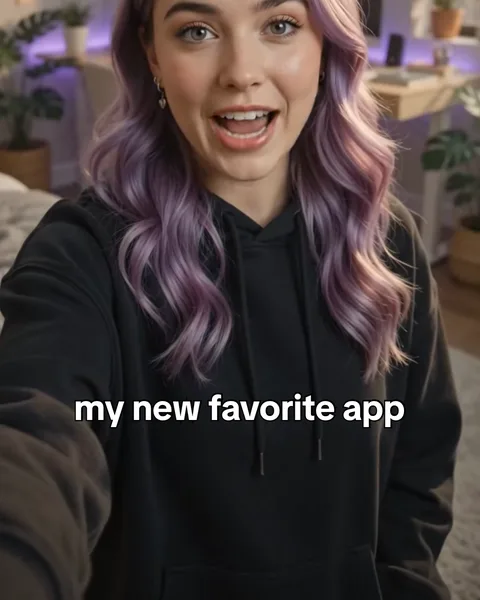
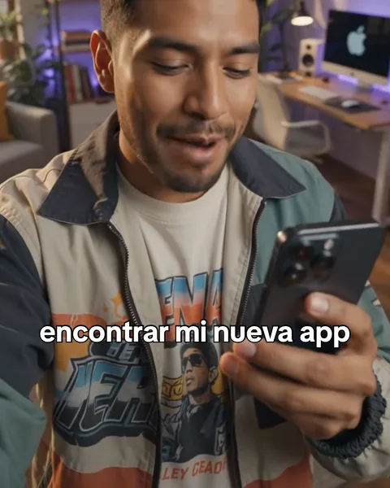

Fonts for TikTok captionsLetras para TikTok
"Letras para TikTok" is how most of Latin America searches for caption fonts. The answer is short: a handful of heavy sans fonts do most of the work, and the rest is outline and placement."Letras para TikTok" es como se busca en casi toda Latinoamérica. La respuesta es corta: un puñado de letras sans pesadas hace casi todo el trabajo, y lo demás es contorno y posición.


The fonts that show up mostLas letras que más aparecen
- TikTok Sans — the platform's own, free, the safe choice.TikTok Sans — la de la propia plataforma, libre, la opción segura.
- Montserrat — the most used font in captions overall.Montserrat — la letra más usada en subtítulos en general.
- Anton and Bebas Neue — tall and condensed, for capitals that hit.Anton y Bebas Neue — altas y angostas, para mayúsculas que pegan.
- Bangers — comic, for loud content.Bangers — de cómic, para contenido ruidoso.
- Dancing Script or Pacifico-style cursive — for aesthetic, quiet videos.Dancing Script u otra cursiva — para videos aesthetic y tranquilos.
What matters more than the fontLo que importa más que la letra
An outline or shadow so the text survives any background, two or three words at a time, and keeping out of the bottom fifth of the screen, where the username and description sit.Un contorno o una sombra para que el texto aguante cualquier fondo, dos o tres palabras a la vez, y quedarse fuera del quinto de abajo de la pantalla, donde van el usuario y la descripción.
How to do it in CharlatanCómo hacerlo en Charlatan
- Open your clip; Charlatan writes the subtitles on the phone, with no upload.Abrí tu clip; Charlatan escribe los subtítulos en el teléfono, sin subir nada.
- Pick a style in Styles, or a font in Fonts — they are grouped as Bold, Aesthetic, Cute, Cursive, Pixel and more.Elegí un estilo en Estilos, o una letra en Letras — están agrupadas en Bold, Aesthetic, Cute, Cursiva, Pixel y más.
- Export at 9:16 and post. Montserrat and TikTok Sans are free.Exportá en 9:16 y publicá. Montserrat y TikTok Sans son gratis.
Questions people also askLo que también preguntan
¿Qué letra usa TikTok en sus subtítulos?
TikTok usa su propia letra, TikTok Sans, que es libre. Charlatan la trae, y el estilo Classic la usa con el borde fino de la app.
¿Cuáles son las letras más usadas para videos?
Montserrat es la más usada en subtítulos de video; después vienen Poppins, Bebas Neue, Anton e Impact. Todas están en Charlatan.
Charlatan is not affiliated with any creator or platform named on this page.Charlatan no tiene relación con ningún creador ni plataforma nombrados en esta página.